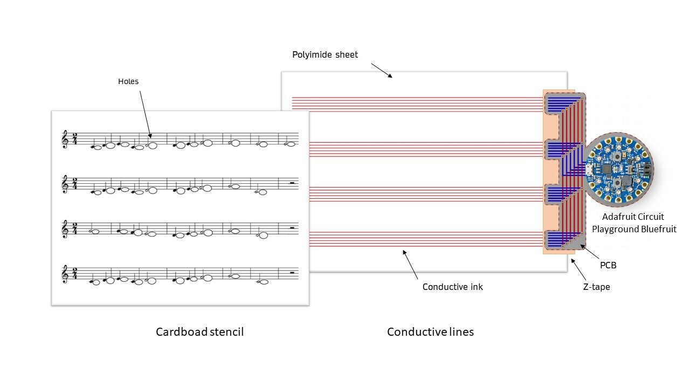

The Interactive Musical Score: An Electronic Score To Hear The Notes From A Paper Score
ABSTRACT
The Interactive Score is a novel instrumental device for children's solfege learningPaper scores are overlaid onto a staff drawn with conductive ink and connected to an Adafruit musical box. Pressing a note in the score triggers its sound, and running fingers over the notes plays a melody.
Learning to read music from the score is an essential part of Western classical music training. Traditionally, children learn the different music notes by singing or playing notes on an instrument, guided by a teacher. We envision a way for children to learn the correspondence between notation and sound by directly touching the score.
The Interactive Score is effortless to use and allows children to make discoveries on their own. The correspondence between the visual, the tactile , and the sound can aid in learning .
Requirements
A virtual demo can be set up with a camera that records the prototype from above and a microphone next to the Interactive Score to capture the sound. An additional camera records the demonstrator from the front.
Program Description
Motivation:
Musical imagery, or the ability to create an image of sound in our minds, is an essential skill for all musicians. For example, brass, winds, strings, and singers imagine the pitch of an upcoming note to make it easier to play it and determine the distance from the previous note 1. Composers and arrangers also use musical imagery when creating a new piece. Musical imagery training has been shown to improve the ability to follow the upward and downward movements of the tonal contour of a musical phrase or imagined tune 2.
Ear training" (or solfège) has traditionally been part of the curriculum of most music schools. An important part of solfège is the ability to read music notation and imagine how it is supposed to sound. We are interested in teaching this skill to children.
Design:
Online many digital music learning applications, which run on screen-based devices, our design augments a traditional paper score. Children already spend a considerable time in front of screens, which can harm their eyes from a young age. Paper is flexible, lightweight and easily transportable, and the incorporation of electronic circuits in paper has shown its attractiveness to children4.


Schema of the system
The demonstrator supplies the electronic part (substrate and PCB) during the showcase. He places a partition (a cardboard stencil) on top of the substrate (where the conductive lines are located). He plays the music and then changes it to another one.
Implementation:
The Interactive score consists of two thin layers. The first layer is the traditional sheet music, printed on cardstock paper, with holes punched for each note. Under this sheet is a polyimide substrate with conductive lines printed on it. The ink paths are 1mm thick, 5cm in length, with a resistance of 0.07 Ohms. The conductive lines are printed using a simple inkjet printer equipped to print with conductive ink and are sintered at 180°C for 73 minutes. This process allows the quick production of flexible circuits 6. The conductive lines are connected to an Adafruit Circuit Playground printed circuit board (PCB) using double-sided “z-tape.”
When the user touches a note on the top layer, contact is made between the finger and the conductive lines through the holes in the cardstock. The signal travels through the ink paths and the z-tape to the PCB, which detects a potential difference using capacitive touch and plays the relevant note. The detection of several simultaneous signals on multiple pins allows the playing of eleven different notes with only six lines.
Usage Scenarios:
Ability to change the score :
Its ease of interchangeability characterizes the paper score. It is easy to produce. It can easily be removed from the box and another one placed in its place to play a different melody. All the electronic parts (substrate, PCB, microcontroller) are independent of the paper score. The user can change it without changing the code or the rest of the device. The sheet music has the exact dimensions of the substrate. Therefore, it is simple to place the two precisely on top of each other to align the holes with the ink lines.
Ability to improvise - by not playing the notes in the same order :
The project allows a great deal of modularity in its use. Just by touching specific notes at certain times, users can experiment with different rhythms and melodies and reconstruct a piece from a few notes.
With a simple score including an ascending scale, he can try his hand at composition. As the microcontroller code is configured to play melodies in C major, it is not possible to create dissonance.
Demonstration video : https://youtu.be/OI1dJia5Igo
Future Works
A "musical tutorial" mode will soon be added so that the user can listen to the score's music before having to play it. This will allow the user to assimilate the musical rhythm (the time between playing each note) with the physical rhythm (the time between pressing notes).
The electronic PCB/microcontroller part will be redesigned to no longer integrate an Adafruit Circuit Playground but a much smaller circuit entirely made by us. The learner can replace each component in case of a problem. It will be possible to improve the speaker's quality and connect the device to Bluetooth or Wi-Fi to play music at a distance.
We are currently looking for partnerships in children's education to research experimentations on the impact of this interactive score on music assimilation. Several parameters would be evaluated, such as the concentration level, playing time, and knowledge retention. We will consider different strategies to transcript musical-rhythmic on this interactive score.
Acknowledgments
We wish to show our appreciation to Marc Tessier for giving much advice about the electronics, the code, and the demo structure. We also thank Madalina Nicolae and Brice Parilusyan for their valuable advice on flexible electronics.
References
Zatorre, Robert J., and Andrea R. Halpern. "Mental concerts: musical imagery and auditory cortex." Neuron 47.1 (2005): 9-12.
Weber, Robert J., and Suellen Brown. "Musical imagery." Music Perception 3.4 (1986): 411-426.
Godoy, Rolf Inge, and Harald Jorgensen. Musical imagery. Routledge, 2012.
Hershman, Anneli, et al. "Light it up: Using paper circuitry to enhance low-fidelity paper prototypes for children." Proceedings of the 17th ACM conference on interaction design and children. 2018.
Exquisite Circuits: Collaborative Electronics Design through Drawing Games. Qi, J., Freed, N., Tseng, T., Shaw, F., Liedahl, B., Glowacki, B. R., and Kawahara, Y. In Creativity and Cognition (C&C ’21), 2021.
Khan, Arshad, et al. "Soft inkjet circuits: rapid multi-material fabrication of soft circuits using a commodity inkjet printer." Proceedings of the 32nd Annual ACM Symposium on User Interface Software and Technology. 2019.